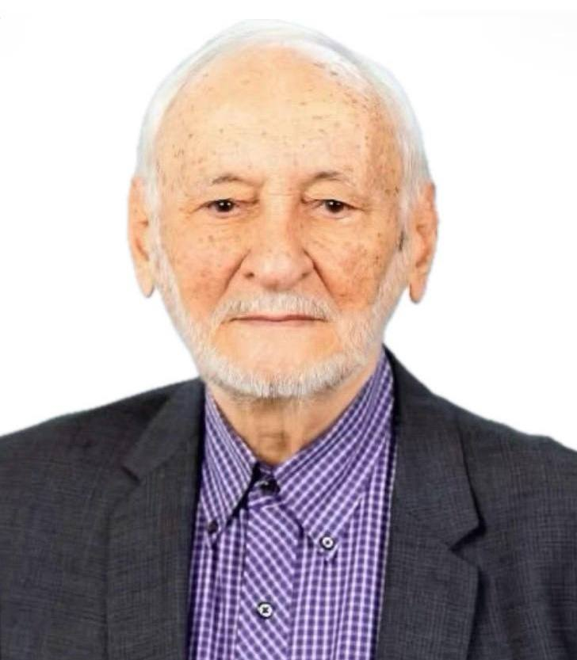

Profil
Natiq Atakişiyev 1996-cı ildən Kuernavakada Mexiko Milli Muxtar Universitetinin Riyaziyyat İnstitutunda tədqiqatçıdır, rütbəsi Investigador Nacional Eméritodur. 1961-ci ildə Azərbaycan Dövlət Universitetində diplom alıb; Bu MSc-yə ekvivalent sayır. 1971-ci ildə Serpuxovdakı Yüksək Enerji Fizikası İnstitutunda fizika-riyaziyyat elmləri namizədi dərəcəsi alıb; Bu PhD-yə ekvivalent sayır. 1987-ci ildə Kiyevdə Nəzəri Fizika İnstitutunda fizika-riyaziyyat elmləri doktoru dərəcəsi alıb. 1983–1994-cü illərdə Bakıda Fizika İnstitutunun elementar zərrəciklər nəzəriyyəsi laboratoriyasının müdiri olub. 131 jurnal məqaləsi, 62 konfrans məqaləsi, 2825 istinad və h-indeks 28 göstərilir.
İş təcrübəsi
Riyaziyyat İnstitutu, Mexiko Milli Muxtar Universiteti, Kuernavaka, Meksika
1996–hazırdaTədqiqatçı (Investigador Nacional Emérito)
Feza Gürsey Əsas Elmlər İnstitutu və Boğaziçi Universiteti, İstanbul, Türkiyə
September–October 2010Qonaq professor
Viqo Universiteti, İspaniya
November–December 2008Qonaq professor
- Tətbiqi riyaziyyat II kafedrası
Korteweg–de Vries Riyaziyyat İnstitutu, Amsterdam Universiteti, Niderland
April 2008Qonaq professor
Viqo Universiteti, İspaniya
April 2007Qonaq professor
- Tətbiqi riyaziyyat II kafedrası
Boğaziçi Universiteti, İstanbul, Türkiyə
2005Qonaq professor (6 ay)
- Fizika kafedrası
Nəzəri Fizika İnstitutu, San-Paulu Ştat Universiteti, San-Paulu, Braziliya
2005Qonaq professor (1 ay)
Sevilya Universiteti, Sevilya, İspaniya
2004Qonaq professor (1 ay)
- Riyaziyyat kafedrası
Sevilya Universiteti, Sevilya, İspaniya
2001Qonaq professor (2 ay)
- Riyaziyyat kafedrası
Boğaziçi Universiteti, İstanbul, Türkiyə
1999Qonaq professor (1 ay)
- Fizika kafedrası
Centre de Recherches Mathématiques, Montréal Universiteti, Montréal, Kanada
1998–1999Qonaq professor (1 ay)
Tətbiqi riyaziyyat və sistemlər üzrə tədqiqat institutu, Mexiko Milli Muxtar Universiteti
1994–1996Qonaq alim (Cátedra Patrimonial de Excelencia, Nivel II)
Fizika İnstitutu, Azərbaycan Elmlər Akademiyası, Bakı, Azərbaycan
1983–1994Laboratoriya müdiri
- Elementar zərrəciklər nəzəriyyəsi laboratoriyası
Tətbiqi riyaziyyat və sistemlər üzrə tədqiqat institutu, Mexiko Milli Muxtar Universiteti
1992–1993Qonaq professor (3 ay)
Karleton Universiteti, Ottava, Kanada
1992Qonaq professor (2 ay)
- Riyaziyyat və statistika kafedrası
Cənubi Florida Universiteti, Tampa, Florida, Amerika Birləşmiş Ştatları
1991Qonaq professor (2 ay)
- Riyaziyyat kafedrası
Karleton Universiteti, Ottava, Kanada
1991Qonaq professor (3 ay)
- Riyaziyyat və statistika kafedrası
Leypsiq Universiteti, Leypsiq, Almaniya
1989Qonaq professor (1 ay)
- Riyaziyyat kafedrası
Tətbiqi riyaziyyat və sistemlər üzrə tədqiqat institutu, Mexiko Milli Muxtar Universiteti
1987–1988Qonaq professor (3 ay)
Yüksək Enerji Fizikası İnstitutu, Berlin-Zeuthen, Almaniya
1984Qonaq professor (3 ay)
Yüksək Enerji Fizikası İnstitutu, Berlin-Zeuthen, Almaniya
1983Qonaq professor (1 ay)
Kolumbiya Universiteti, Nyu-York, Amerika Birləşmiş Ştatları
1973–1974Qonaq alim (10 ay)
- Fizika kafedrası
Fizika İnstitutu, Azərbaycan Elmlər Akademiyası, Bakı, Azərbaycan
1972–1983Böyük elmi işçi
Fizika İnstitutu, Azərbaycan Elmlər Akademiyası, Bakı, Azərbaycan
1967–1972Elmi işçi
Birləşmiş Nüvə Tədqiqatları İnstitutu, Dubna
1964–1967Nəzəri fizika üzrə aspirantura
- Nəzəri fizika laboratoriyası
Fizika İnstitutu, Azərbaycan Elmlər Akademiyası, Bakı, Azərbaycan
1961–1964Kiçik elmi işçi
Təhsil
DSc
1987Fizika-riyaziyyat elmləri
Nəzəri Fizika İnstitutu, Kiyev
PhD
1971Fizika-riyaziyyat elmləri namizədi. Bu PhD-yə ekvivalent sayır
Yüksək Enerji Fizikası İnstitutu, Serpuxov, Rusiya
MSc
1961Fizika. Diplom MSc-yə ekvivalentdir
Azərbaycan Dövlət Universiteti, Bakı, Azərbaycan
Elmi rəhbərlik
- PhD — 5 — Şakir M. Nağıyev, 1979; Mixail S. Pomerants, 1989; Elçin İ. Cəfərov, 1999; Juvenal Rueda Paz, 2008, Sobre algunas familias de q-polinomios; Aynurə M. Cəfərova, 2016
Elmi göstəricilər
- Jurnal məqalələri — 131 — Özü tərəfindən — June 2024
- Konfrans məqalələri — 62 — Özü tərəfindən — June 2024
- İstinadlar — 2825 — Özü tərəfindən — June 2024
- h-indeks — 28 — Özü tərəfindən — June 2024
Nəşrlər
Kitablar və dərsliklər
1. Atakishiyev, N. M.; Seligman, T. H.; Wolf, K. B. (eds.). Proceedings of the IV Wigner Symposium, Guadalajara, Mexico, 7–11 August 1995. World Scientific, Singapore, 1996.
2. Atakishiyev, N. M.; de la Peña, J. A.; Vallejo, E. (eds.). Proceedings of the XV Coloquio Latinoamericano de Álgebra, Cocoyoc, Morelos, Mexico, 20–26 July 2003. Contemporary Mathematics, vol. 376. American Mathematical Society, Providence, 2005.